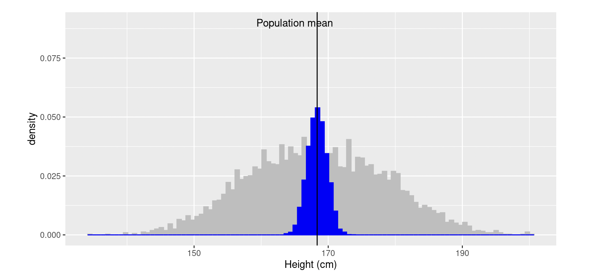
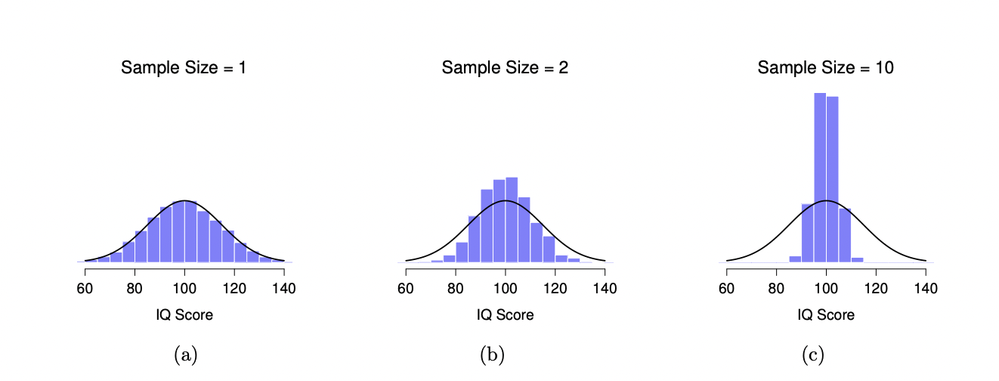
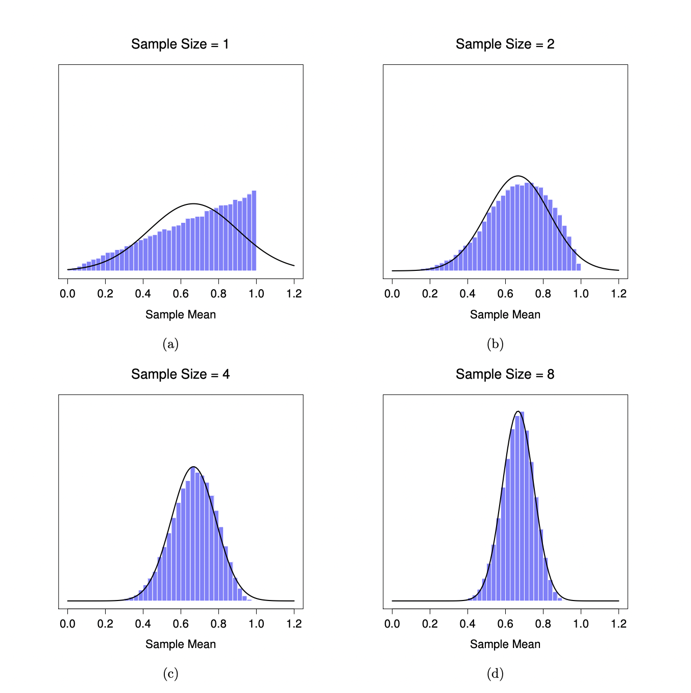
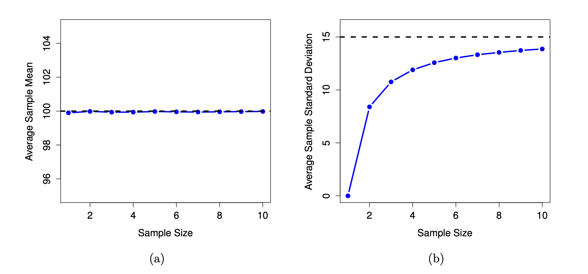
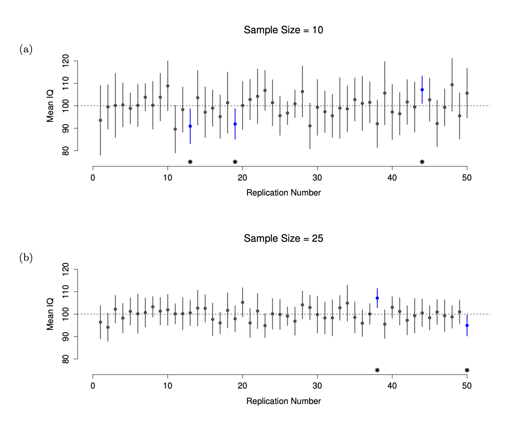

Chapter 6 - Sampling data
Contents
the data generation process
equation representation of a model (4.6)
sources of variation (4.7)
randomness (4.8)
probability vs. statistics
making a probability model - knowing the population (law of large numbers)
basic rules of probability
probability distributions
conditional probability
when you dont know the population, how to try and estimate the DGP: sampling. this is what leads to statistics
Chapter 6 - Sampling data#
6.1 From populations to samples#
In the previous chapter we discussed how knowing a probability model allows us to predict outcomes of future events. Even in cases where we don’t know the data generation process, we can still create an accurate probability model if we know the entire population of outcomes. For example, if we wanted to know the probability that someone in the US had COVID-19 right now, and if we were able to test every individual in the country right this moment, we’d be able to count how many people were covid-positive out of the entire group and calulate probability that way. The population is the entirety of the group we want to study, so if we have data from that entire group, we can calculate summaries and probabilities really easily.
However, it is almost always impractical, or straight up impossible, to collect data from the entire population you care about. If a psychologist cares about a general question like “the way humans think,” there’s no way they can test every human on the planet in order to generate an accurate distribution of the population data.
Instead, one of the foundational ideas in statistics is that we can make guesses about the features of an entire population based on a smaller sample of individuals from that population. In this chapter we will introduce the concept of statistical sampling and discuss why it works.
6.2 The sampling process#
Anyone living in the United States will be familiar with the concept of sampling from the political polls that have become a central part of our electoral process. In some cases, these polls can be incredibly accurate at predicting the outcomes of elections. The best known example comes from the 2008 and 2012 US Presidential elections, when the pollster Nate Silver correctly predicted electoral outcomes for 49/50 states in 2008 and for all 50 states in 2012. Silver did this by combining data from 21 different polls, each of which included data from about 1000 likely voters. If we consider the population of interest during an election to be all the people who cast a vote, then in this case the intentions of that 1000-person sample very closely matched the overall voting behavior of the entire electorate. Yet, the 2016 US Presidential election was noteworthy for how badly polls predicted the outcome (Clinton was strongly favored to win by many polling samples, but the electorate behaved differently). This illustrates the extreme importance of picking a sample that is representative of your population of interest.
Since you don’t know the population distribution (which is the whole reason we’re sampling data in the first place), it can be hard to know how representative a sample is. Over time, statisticians have figured out that the best way to pick a sample that most closely resembles the shape, center, and variability of the target population is to draw a random sample, where every member of the population has an equal chance of getting picked for the sample. This is also usually impractical, though. For a psychologist, it’s not as easy to contact, recruit, or even know about some people in the population compared to others (indeed, the data in psychology results are often based on an over-representation of psychology students, since universities often require their psych majors to participate in studies!). For an ecologist, it is much easier to access animals that live in one site nearby, versus the same species that lives in a remote canyon. You can probably think of examples in other fields of study that make it hard to sample every member of the population at equal likelihood.
Instead, there are a variety of more practical sampling methods that are easier to do, and which one hopes is mostly similar to what a random sample looks like. The most common type is that described above, where the sample is comprised of datapoints that were the easiest to obtain. This is called convenience sampling. The samples are chosen in a way that is convenient to the researcher. In real life, most studies are convenience samples of one form or another. This sometimes does a good job of creating a random sample, but can instead create a biased sample if there’s some reason for why the sample is easier to collect that also affects the variables being studied. E.g., can you think of any way psychology students might differ from students of other majors? There are other types too that are less common that you may learn about in other classes (.e.g, stratified sampling, snowball sampling, etc.). Whatever sampling method you use, the most important thing to keep in mind is how likely it is to create a representative sample, and what factors to watch out for that might contribute to bias.
In addition, it is important to know the difference between sampling with replacement and sampling without replacement. With replacement means that, after picking a data point out of the entire population for inclusion in the sample, you record its value and then put it back “into the bag” of the population, so that it has a chance of being selected again. Without replacement is the opposite - once a data point is recorded, it can’t be selected again. In real world data collection, you almost always use sampling without replacement because you want to collect as much unique information in your data as possible. I.e., once someone has participated in your study, you don’t let them participate again. However, for some theoretical procedures that we’ll talk about in a moment, sampling with replacement is an underlying assumption.
6.3 Sampling error#
A population can be described by summaries of its distribution: center, shape, spread. These are called population parameters. If we take a sample of data from this population, it will also create a distribution which we can calculate summaries of as well. These are called the sample statistics.
Even with a random sample, the sample statistics won’t always match the parameters of the population from which it came. In a survey of student height on campus, you can imagine the possibility (albeit small) of a random sample that ended up being comprised of the entire basketball team. In addition, if you were to take several different samples, the sample statistics for each one won’t always be the same. For example, let’s say we know the population mean of height for all Claremont College students is 168.35cm, and the standard deviation is 10.16cm. Then, a researcher comes along and picks 5 different samples of 50 students each, creating the following sample statistics:
Sample number |
Height mean (cm) |
Height SD (cm) |
|---|---|---|
1 |
167 |
9.1 |
2 |
171 |
8.3 |
3 |
170 |
10.6 |
4 |
168 |
9.5 |
5 |
166 |
9.5 |
The sample mean and standard deviation are similar but not exactly equal to the population values. This is called sampling error.
6.4 Sampling distributions#
Now let’s take a large number of samples (say, 5,000) of 50 individuals and compute the mean for each of them. We will sample with replacement, so that we don’t run out of datapoints to do this with. The result is a set of 5,000 sample statistics - kinda sounds like a dataset, doesn’t it? In fact, we can make a distribution of sample statistics, rather than only raw observations. In this case, the statistic (e.g. the mean of each separate sample) is each unique entry in the distribution. This is a sampling distribution - a distribution of sampling statistics. Specifically, this is a sampling distribution of the mean (since that’s the statistics we’re using).
The gray histogram above shows each raw observation for height in the dataset, and the blue histogram shows the mean values for each sample. The sample means vary somewhat, but something to notice is that overall they are centered around the population mean. The average of the 5,000 sample means (168.3463) is very close to the true population mean (168.3497).
Technically you can make a sampling distribution for any statistic you can think of - the mode, the maximum, even statistics we’ll learn about later like a t-stat or F-value. The mean is the most common to talk about and care about, but it’s not the only basis for a sampling distribution.
6.5 The importance of sample size#
You probably have some intuition that statistical inferences are better the bigger your sample size. In the popular conscious, it seems like “sample size” ranks right under “correlation is not causation” in terms of critiques about psychology research. Sample size is indeed an important concern, and in this section you’ll learn why.
In the example above, each of our samples was 50 people. For another, let’s see what happens when our sample size is as small as possible. Let’s say among a population of people with IQ scores, we will pick a sample that contains only one person’s data. Calculating the mean of this sample is just the raw value of the individual score we picked out. Doing this for several samples thus reveals a sampling distribution that approaches the same shape as the population distribution (since each “sample” is just one data point from the population distribution; panel A below). However, when we raise the sample size to 2 (panel B), the mean of any one sample tends to be closer to the population mean than a single person’s IQ score, and so the histogram (i.e., the sampling distribution) is a bit narrower than the population distribution. When we raise the sample size to 10 (panel C), we can see that the distribution of sample means tend to be fairly tightly clustered around the true population mean.
Based on this demonstration, we can see that if you only have a few observations in a sample, any one sample mean is likely to be quite inaccurate: if you replicate a small experiment and recalculate the mean you’ll get a very different answer. In other words, the sampling distribution is quite wide. This is why statistical answers from studies with small samples can be quite misleading.
In contrast, if you replicate a large experiment and recalculate the sample mean, you’ll probably get nearly the same answer you got last time, so the sampling distribution will be very narrow. We can quantify this variation in the sampling distribution by calculating the standard deviation of the sampling distribution, which is a special version of the standard deviation referred to as the standard error. The standard error of a statistic is often denoted SE, and since we’re usually interested in the standard error of the sample mean, we often use the acronym SEM. As you can see just by looking at the above picture, as the sample size N increases, the SEM decreases.
6.6 The Central Limit Theorem#
Despite how poorly a single small sample can do on telling you about a population parameter, it’s important to remember that several samples together, even if very small, will stack up into a distribution that is centered on the true population parameter.
Another interesting observation is that the sampling distribution in the above picture was always normally distributed. Is this because IQ is the kind of data that has a normal distribution in the population? Actually, a remarkable thing is that no matter what shape your underlying population distribution is, as you grab more samples and plot their means together, the sampling distribution of the mean starts to look more like a normal distribution. To give you a sense of this, check out the figure below.
In panel A is a weird distribution where the maximum value is the most numerous. Comparing it to the black line, which shows what a perfectly normal shape would be, you can see the population distribution is far from normal. Panels B-D show the sampling distributions of samples taken from the population distribution in A with various sample sizes (2, 4, and 8 respectively. As you can see, even though the original population distribution is non-normal, the sampling distribution of the mean becomes pretty close to normal by the time you have a sample of even 4 observations.
On the basis of these figures, it seems like we have evidence for all of the following claims about the sampling distribution of the mean:
The mean of the sampling distribution is the same as the mean of the population
The standard deviation of the sampling distribution (i.e., the standard error) gets smaller as the sample size increases
The shape of the sampling distribution becomes normal as the sample size increases
As it happens, not only are all of these statements true, there is a very famous theorem in statistics that proves all three of them, known as the Central Limit Theorem. Among other things, the Central Limit Theorem tells us that if the population distribution has mean µ and standard deviation σ, then the sampling distribution of the mean also has mean µ, and the standard error of the mean is
where N is the size of a sample. This says that, when sampling from a population with standard deviation σ, the means of all samples of size N will vary around the true mean by the SEM amount. Further, because we divide the population standard devation σ by the square root of the sample size N, the SEM gets smaller as the sample size increases. It also tells us that the shape of the sampling distribution becomes normal.
This result is useful for all sorts of things. It tells us why large experiments are more reliable than small ones, and because it gives us an explicit formula for the standard error it tells us how much more reliable a large experiment is. It tells us why the normal distribution is, well, normal. In real experiments, many of the things that we want to measure are actually averages of lots of different quantities (e.g., arguably, “general” intelligence as measured by IQ is an average of a large number of “specific” skills and abilities), and when that happens, the averaged quantity should follow a normal distribution. Because of this mathematical law, the normal distribution pops up over and over again in real data.
6.7 Estimating population parameters#
In all the examples in the previous sections, we knew the population parameters ahead of time. This is helpful for learning about statistics, but of course the most interesting things to do research on are the things we don’t already know about; that which we don’t know the population distribution for.
For instance, suppose you wanted to measure the effect of low level lead poisoning on cognitive functioning. Perhaps you decide that you want to compare typical IQ scores, with a mean of 100 and SD of 15, to people in Oxnard living near the Halaco Superfund site, where metallic waste from a smelting operation leaked into the groundwater between 1965 and 2004. If you believe that lead poisoning affects cognitive functioning, then it would not be reasonable to assume that the population distribution of IQ in Oxnard will be the same as the population distribution of IQ in a city without lead pollution. We’re going to have to estimate the population parameters from a sample of data. So how do we do this?
Estimating the population mean#
Suppose we go to Oxnard and 100 of the locals are kind enough to sit through an IQ test. The average IQ score among these people turns out to be X¯=98.5. So what is the true mean IQ for the entire population of Oxnard? Obviously, we don’t know the answer to that question. It could be 97.2, but if could also be 103.5. We only have one sample, so we cannot give a definitive answer. Nevertheless, right now our “best guess” is 98.5. That’s the essence of statistical estimation: giving a best guess.
In this example, estimating the unknown poulation parameter is straightforward. We calculate the sample mean, and we use that as an estimate of the population mean. However, it’s very important to remember that the sample statistic and the estimate of the population parameter are conceptually different things. A sample statistic is a description of your data, whereas the estimate is a guess about the population. With that in mind, statisticians often different notation to refer to them. For instance, if true population mean is denoted µ (pronouned “mew”), then we would use ˆµ (“mew hat”) to refer to our estimate of the population mean. In contrast, the sample mean is denoted X¯ (“X bar”) or sometimes m. To help keep the notation clear, here’s a handy table:
Notation for sample mean, population mean, and estimate of the population mean
Symbol |
What is it? |
Do we know it? |
|---|---|---|
X¯ |
Sample mean |
Yes, calculated from the raw data |
µ |
True population mean |
Almost never known for sure |
µˆ |
Estimate of the population mean |
Yes, identical to the sample mean |
Estimating the population standard deviation#
So far, estimation seems pretty simple, and you might be wondering why we forced you to read through all that stuff about sampling theory. In the case of the mean, our estimate of the population parameter (i.e. ˆµ) turned out to identical to the corresponding sample statistic (i.e. X¯). However, that’s not always true. To see this, let’s think about how to construct an estimate of the population standard deviation, which we’ll denote ˆσ. What shall we use as our estimate in this case?
Notation for sample standard deviation, population standard deviation, and estimate of the population standard deviation
Symbol |
What is it? |
Do we know it? |
|---|---|---|
s |
Sample sd |
Yes, calculated from the raw data |
σ |
True population sd |
Almost never known for sure |
σˆ |
Estimate of the population sd |
Yes, identical to the sample mean |
Your first thought might be that we could do the same thing we did when estimating the mean, and just use the sample statistic as our estimate. That’s almost the right thing to do, but not quite. Here’s why. Suppose we have a sample that contains a single IQ observation of 98. This is a perfectly legitimate sample, even if it does have a sample size of N=1. It has a sample mean of 98, and because every observation in this sample is equal to the sample mean (obviously!) it has a sample standard deviation of 0: the sample contains a single observation and therefore there is no variation observed within the sample. But as an estimate of the population standard deviation, this may feel completely wrong. Knowing that data implies variability, the only reason that we don’t see any variability in the sample is that the sample is too small to display any variation, not because everyone has an IQ of 98. So, if you have a sample size of N=1, it feels like the right answer about the population standard deviation is just to say “no idea at all”.
Suppose we now make a second observation. The dataset now has N=2 observations, and the complete sample now contains the observations 98 and 100. This time around, our sample is just large enough for us to be able to observe some variability: two observations is the bare minimum number needed for any variability to be observed. For our new dataset, the sample mean is X¯=99, and the sample standard deviation is s=1. What intuitions do we have about the population? Again, as far as the population mean goes, the best guess we can possibly make is the sample mean: if forced to guess, we’d probably guess that the population mean cromulence is 21. What about the standard deviation? This is a little more complicated. The sample standard deviation is only based on two observations, so you may feel that we haven’t given the population “enough of a chance” to reveal its true variability to us. It’s not just that we suspect that the estimate is wrong: after all, with only two observations we expect it to be wrong to some degree. The worry is that the error is systematic, such that every sample of 2 observations would be wrong in the same direction. Specifically, we suspect that the sample standard deviation is likely to be smaller than the population standard deviation.
We can use R to simulate the results of many samples to demonstrate this. Given the true population mean of IQ is 100 and the standard deviation is 15, we can use the rnorm() function to generate the the results of an experiment in which we measure N=2 IQ scores, and calculate the sample standard deviation. If we do this over and over again, and plot a histogram of these sample standard deviations, we get the sampling distribution of the standard deviation (see figure below).
Even though the true population standard deviation is 15, the average of the sample standard deviations is only 8.5. Notice that this is a very different result to what we found when we plotted the sampling distribution of the mean. In that sampling distribution, the population mean is 100, and the average of the sample means is also 100.
Now let’s extend the simulation. Instead of restricting ourselves to the situation where we have a sample size of N=2, let’s repeat the exercise again for sample sizes from 1 to 10. If we plot the average sample mean and average sample standard deviation as a function of sample size, you get the results shown in this next figure.
On the left hand side (panel A) is the average sample mean for each sample size, and on the right hand side (panel B) is the average standard deviation for each sample size. The two plots are quite different: no matter the sample size, the average sample mean from a sample distribution of the mean is equal to the population mean. It is an unbiased estimator, which is the reason why your best estimate for the population mean is the sample mean. The plot on the right shows that the average sample standard deviation from a sample distribution of the standard deviation is smaller than the population standard deviation σ for small sample sizes. It is a biased estimator. In other words, if we want to make a “best guess” σˆ about the value of the population standard deviation σ, we should make sure our guess is a little bit larger than the sample standard deviation s.
The fix to this systematic bias turns out to be very simple. Here’s how it works. Before tackling the standard deviation, let’s look at the variance. If you recall from Chapter 5, the sample variance is defined to be the average of the squared deviations from the sample mean, with one change. That is:
where the sum of the squared deviations are divided by N-1 instead of N, like in a normal average. As it turns out, this change is all we need to do to make variance an unbiased estimator. This is also true in the equation for standard deviation:
This is why it’s important to keep the idea of a sample statistic and an estimate of the population parameter separate in your head. For mean, they are calculated the same way, but for standard deviation they are calculated differently. Notice also that, because the R functions var() and sd() use N-1, they are technically calculating a population parameter estimate and not a sample statistic. This is because, in almost every real life application, what we actually care about is the estimate of the population parameter (i.e., extrapolating from the current sample to saying something about the larger world), and so people usually report ˆσ rather than s.
6.8 Confidence intervals#
Up to this point in this chapter, we’ve outlined the basics of sampling theory which statisticians rely on to make guesses about population parameters on the basis of a sample of data. As this discussion illustrates, one of the reasons we need all this sampling theory is that every data set leaves us with a some of uncertainty, so our estimates are never going to be perfectly accurate. What has been missing from this discussion is an attempt to quantify the amount of uncertainty that attaches to our estimate. It’s not enough to be able guess that the mean IQ of undergraduate psychology students is 110 - we also want to be able to say something that expresses the degree of certainty that we have in our guess. For example, it would be nice to be able to say that there is a 95% chance that the true mean lies between 104 and 116.
The name for this is a confidence interval for the mean. Armed with an understanding of sampling distributions, constructing a confidence interval for the mean is actually pretty easy. Suppose the true population mean is µ and the
standard deviation is σ. We’ve just finished running a study that has N participants, and the mean IQ among those participants is X¯. We know from our discussion of the Central Limit Theorem that the sampling distribution of the mean is approximately normal. We also know from our discussion of standard deviation in Chapter 5 that 95% of a normally distribution will fall within 2 standard deviations of the true mean (it’s more like 1.96 standard deviations, actually). To be more precise, we can use the qnorm() function (like quantile() but for sampling from the normal distribution rather than a dataset) to compute the 2.5th and 97.5th percentiles of the normal distribution:
qnorm(p=c(0.025,0.975))
- -1.95996398454005
- 1.95996398454005
Next, recall that the standard deviation of the sampling distribution of the mean is referred to as the standard error (not to be confused with the mean of the sampling distriution of the standard deviation - be careful with your naming!) Because several sample means compile into a normal distribution (according to the Central Limit Theorem), there is a 95% chance than one sample mean is within 1.96 standard error of the mean of the sampling distribution. Written mathematically, there is a 95% chance that:
where the SEM is equal to σ/sqrt(N). However, that’s not answering the question that we’re actually interested in. The equation above tells us what we should expect about the sample mean, given that we know what the population parameters are. What we want is to have this work the other way around: we want to know what we should believe about the population parameters, given that we have observed a particular sample. Using a little algebra, we can rewrite our equation as:
What this is telling is is that the range of values has a 95% probability of containing the population mean µ. We refer to this range as a 95% confidence interval, denoted CI95. In short, as long as N is sufficiently large – large enough for us to believe that the sampling distribution of the mean is normal – then we can write this as our formula for the 95% confidence interval:
Note that we’re specifying σ^ here because we usually don’t know the true population σ. Also, there’s nothing special about the number 1.96 here: it just happens to be the multiplier you need to use if you want a 95% confidence interval. If I’d wanted a 70% confidence interval, I could have used the qnorm() function to calculate the 15th and 85th quantiles:
qnorm(p=c(0.15,0.85))
- -1.03643338949379
- 1.03643338949379
and so the formula for CI70 would be the same as the formula for CI95 except that we’d use 1.04 as our magic number rather than 1.96.
Additionally, because the SEM is included in the equation, we can conclude that smaller sample sizes (and thus larger SEM) lead to a wider confidence interval.
Pitfall of interpreting confidence intervals#
The hardest thing about confidence intervals is remembering specifically what they mean. Whenever people first encounter confidence intervals, often the first instinct is to treat an interval as the interval in which future sample means can be found. This is incorrect, and to understand it we have to remember the concept of repeated sampling. Imagine taking repeated samples of the same size from the same population. For each sample calculate a 95% confidence interval. Since the samples are different, so are the confidence intervals. We know that 95% of these intervals will include the population parameter. However, without any additional information, we cannot say which ones! Thus with only one sample, and no other information about the population parameter, we can say there is a 95% chance that this interval includes the population parameter. But this does not mean that 95% of other sample means will be in this interval. The confidence interval itself is an estimate, not a fixed parameter.
95% confidence intervals. The top (panel A) shows 50 simulated replications of an experiment in which we measure the IQs of 10 people. The dot marks the location of the sample mean, and the line shows the 95% confidence interval. In total 47 of the 50 confidence intervals do contain the true mean (i.e., 100), but the three intervals marked with asterisks do not. The lower graph (panel B) shows a similar simulation, but this time we simulate replications of an experiment that measures the IQs of 25 people. The sample means are generally closer to the population mean, so the CIs can be narrower in order for ~95% of them to contain the true mean and 5% of them to not.
Chapter summary#
After reading this chapter, you should be able to:
Recount the three statements proved by the Central Limit Theorem
Chapter quiz#
single sample statistics versus sampling distribution statistics